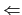

suivant: La couleur
monter: La géométrie plane (2D)
précédent: Comment définir des objets
Table des matières
Index
Pour déplacer une figure il faut être en mode Pointer.
Lorsqu'on s'approche d'un objet géomtrique, le curseur change de forme
quand on est sur cet objet : il devient une petite flèche rouge
.
On clique alors sur l'objet à déplacer puis sans relacher le bouton de la
souris, on déplace l'objet en bougeant la souris. Pour annuler
un déplacement, il suffit de relacher la souris en-dehors de la figure.
Il faut savoir que le déplacement est plus rapide si on a coché
 dans la configuration des attributs.
dans la configuration des attributs.
Documentation de giac écrite par Renée De Graeve